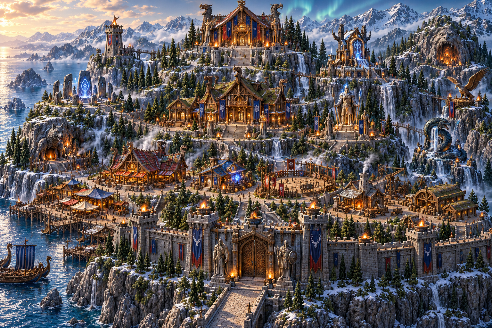
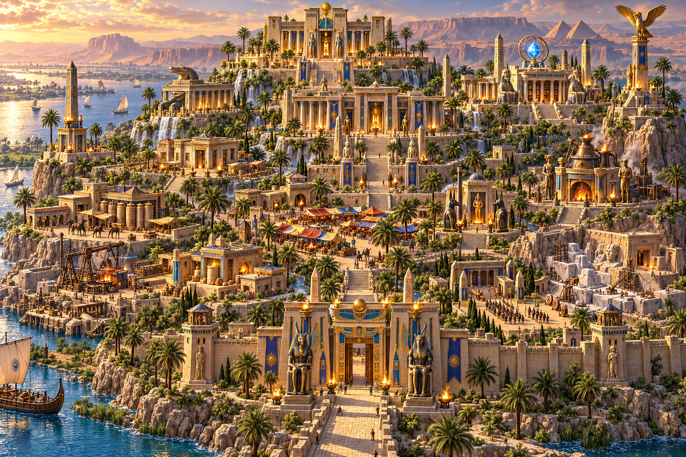
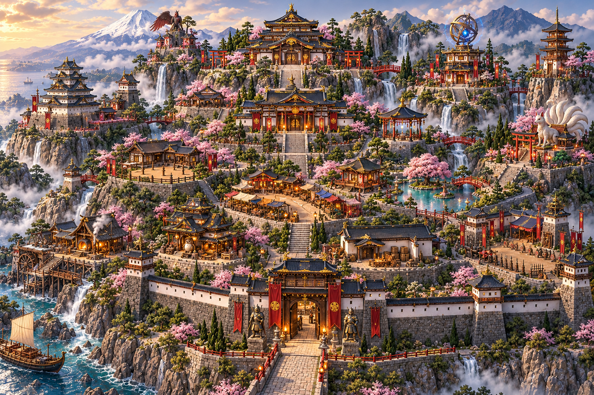
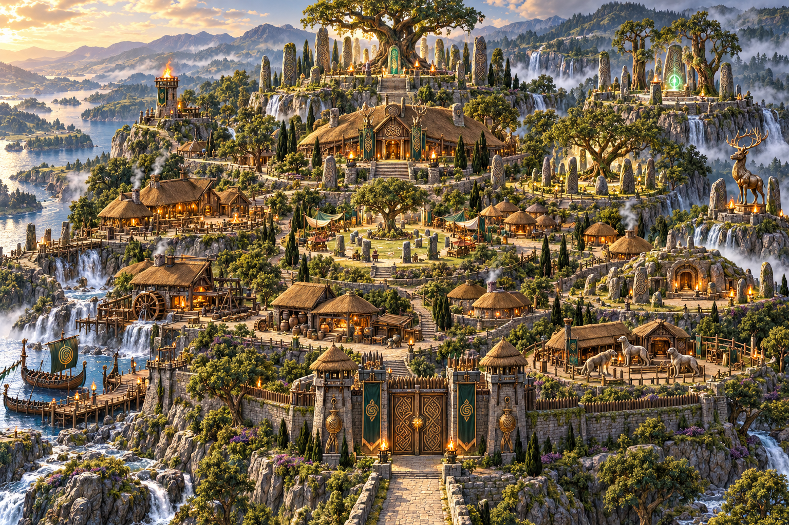
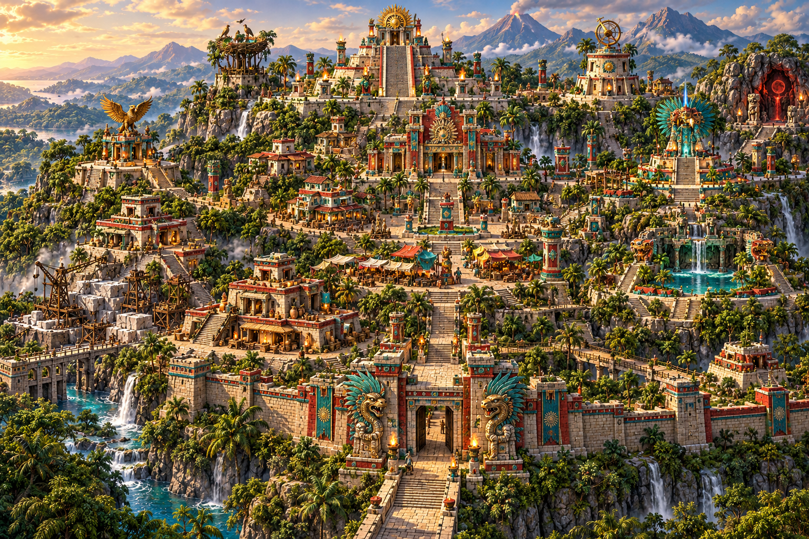

Egyptian City

Japanese Castle Town

Celtic Hillfort

Five complete city kits. Each includes 33 building versions, four development backgrounds and a recovery landscape. Open the game and import a stage save from a city's background gallery to try it. Compare all 20 development backgrounds.




